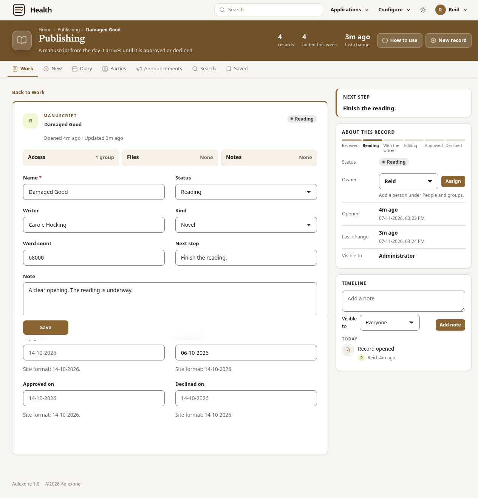
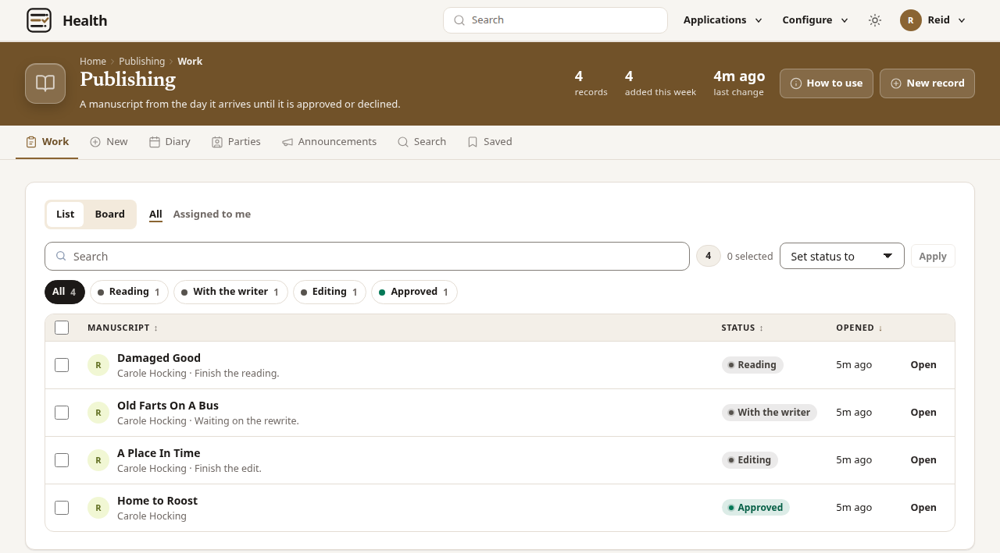
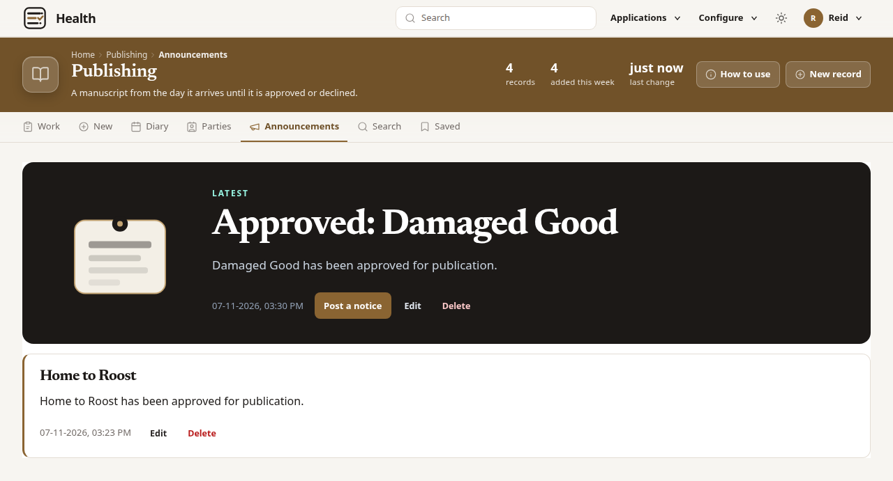
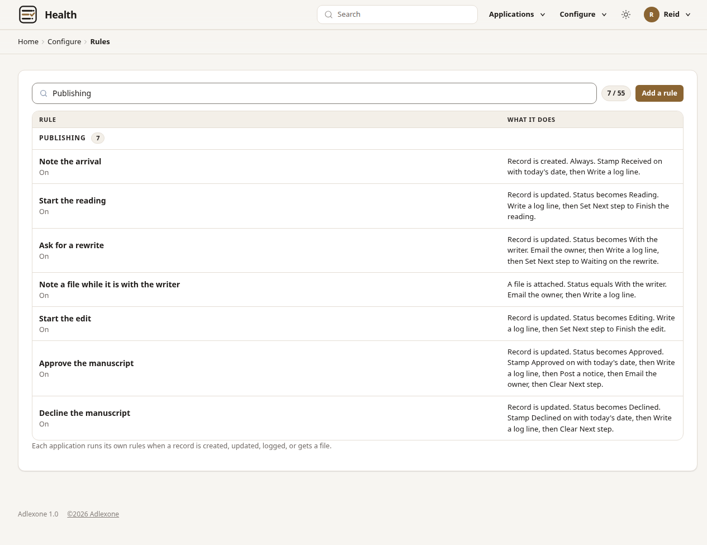

Build an application for a line of work.
Adlexone is the software you use to build it. You choose the fields on each record, the statuses that record moves through, and the rules that run when a status changes. A person opens a record and moves the status. The application writes the date, the log, the notice, and the email. The timeline and the files stay on the record. You run the software on your server.

The screen a person uses
The person doing the work opens a record, sees where it stands, and moves the status.
-
The list
The list is the work, with the status on each record.
-
The fields
Open a record. The fields are the ones set for that work. On Damaged Good they are the manuscript, the writer, the kind, and the word count.
-
The timeline
The timeline is the log of what has happened. Files sit on the record. Next step says what is waiting, such as finish the reading.
-
The status
The person moves the status and saves. They do not type the date, the log, or the notice. The rule does that.

What you set
An application is one line of work. You decide the fields, the statuses, and what happens when a status changes. Blank starts with no fields.
-
Fields
Text, a date, a menu, and a person. Status is one of the menus, with the words used for that work.
-
Statuses
Where the work stands, and the ways it can finish. Publishing uses Received, Reading, With the writer, Editing, Approved, and Declined.
-
On every record
The timeline, the files, the dates, and Next step. These are part of the application.
-
Rules
When a status changes, a rule can stamp a date, write the log, post a notice, send the email, and set or clear Next step.
One example
Publishing is one application: a manuscript from the day it arrives until it is approved or declined. Leave requests is another: a day off, from the day it is asked until it is approved or declined. Both are a record, a status, and rules.
Publishing in use
Damaged Good is being read. You approve the manuscript. The application writes the date, the log, the notice, and the email. A leave request is the same kind of record.
Publishing is the list. Damaged Good is still being read.
Open the manuscript. Status is Reading, and the next step is to finish the reading.
Move Status to Approved and save. The application stamps Approved on, writes the log, and clears Next step.
A notice is posted that Damaged Good has been approved for publication. The same words are the email.

Building an application
You create the application and choose a blueprint. The fields and the rules are already there. This example is Publishing. Blank starts with no fields.
Create an application. The name in this example is Publishing, and the guide explains how a manuscript moves. Blank starts with no fields.
Choose the Publishing blueprint. It sets the fields, and the rule that runs when a manuscript is approved.
Those rules are on the application. Approve the manuscript stamps the date, writes the log, posts the notice, sends the email, and clears Next step.
